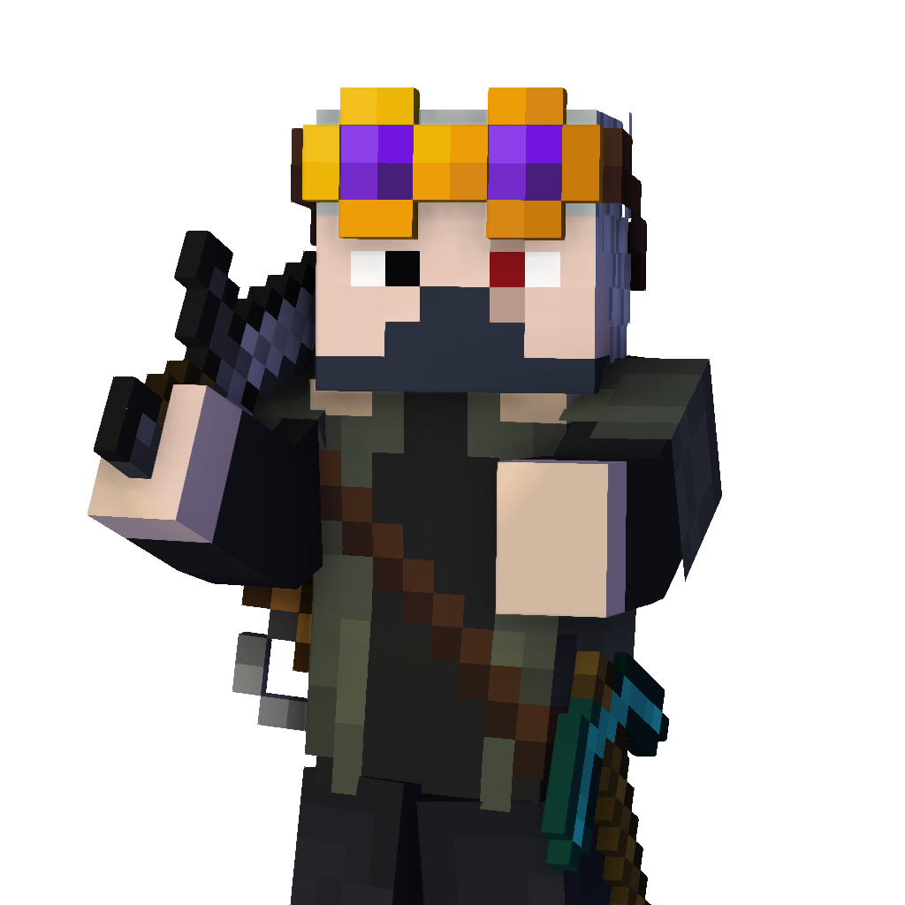

My projects.
Well, as I said I like to make Minecraft mods and program games, of course I have some of my projects to present.
Also, in case this isn't enough for your you can snoop around my GitHub if you want!

Well, as I said I like to make Minecraft mods and program games, of course I have some of my projects to present.
Also, in case this isn't enough for your you can snoop around my GitHub if you want!
Hats & Cosmetics is a Mod for Minecraft Java Edition written is Java via Forge API.
In games I like to customize my characters and unfortunately in Minecraft it's not that much possible, at least not in a way I would like to. So I made Hats & Cosmetics.
It only started as a silly project but eventually it turned into a serious project with over 20.000 downloads on CurseForge and with not so regular updates.
Just like Hats & Cosmetics Darkest Stress is a Mod for Minecraft Java Edition written is Java via Forge API.
I started working on this project around the same time I started playing Darkest Dungeon, and since I wanted to practice Player Capabilities I decided to replicated Darkest Dungeon's Stress mechanic.
This mod was supposed to be featured in an unreleased project by The Kappar Crew.
So, what is this? Well, this is my little project that I do in my free time. It's a First person Roguelike game inspired by Thaumcraft and souls.
The game will basically be about going around a dungeon, looting and trying to gear up and a lot of fighting. There might be a story to the game but hey, first I want to make something that at least partically represents a game.